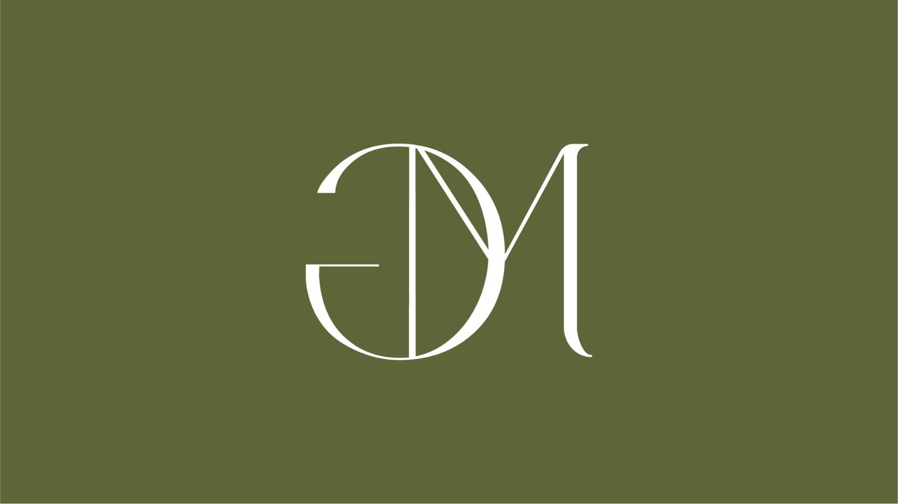
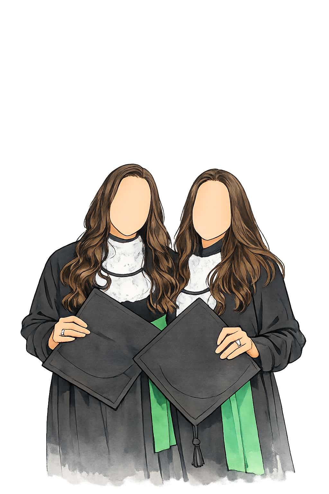
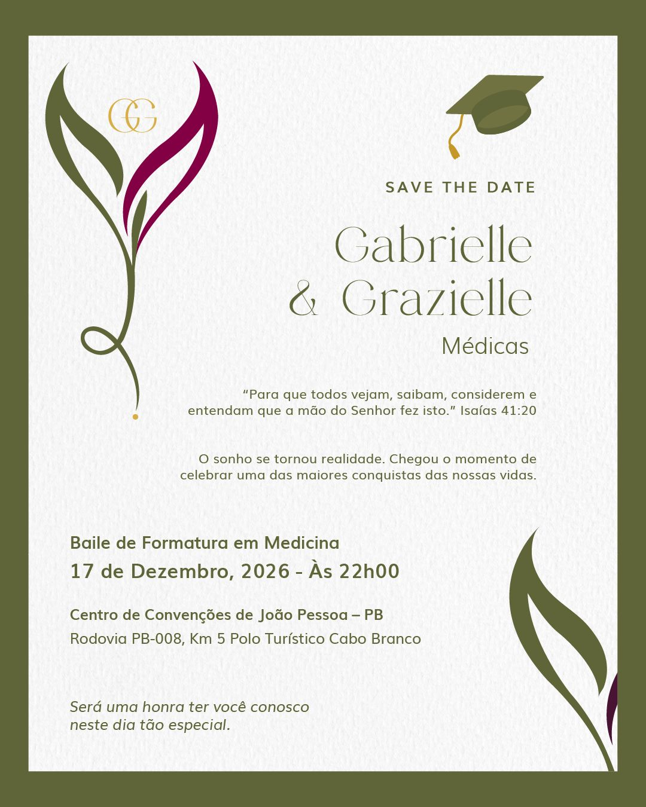
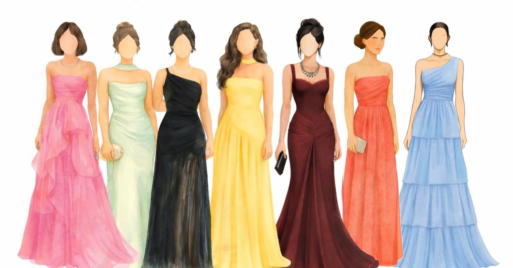

Traje
Traje social (passeio completo), pensado para uma noite de celebração elegante.

Gabrielle & GrazielleGuia do convidado
Baile de Formatura em Medicina
Contagem regressiva para a formatura


Galeria
Sobre o baile
Este site foi criado para reunir, em um só lugar, tudo o que você precisa para se organizar com tranquilidade e viver esse momento conosco da melhor forma.
Confirmação de presença
A confirmação é indispensável para a organização do baile. O destaque deste site é justamente facilitar esse passo para todos os convidados.
Prazo final: 13/05/2026
Dress code
Traje social (passeio completo), pensado para uma noite de celebração elegante.
A COR VERDE será EXCLUSIVA das formandas, por isso, pedimos que seja evitada pelos convidados.
Sugerimos produções clássicas, com tecidos nobres e acessórios elegantes, valorizando a sofisticação da noite.

Vestidos longos e sofisticados em paleta elegante.
Ternos de corte clássico e visual social alinhado.
Como chegar
O baile será realizado no Centro de Convenções de João Pessoa, localizado no Polo Turístico Cabo Branco. Para facilitar sua chegada, disponibilizamos abaixo o mapa e o acesso direto à rota pelo Google Maps. Queremos que sua experiência seja tranquila desde a chegada.
Passagens
Ao pesquisar passagens, compare voos para João Pessoa e para Recife. Dependendo da cidade de origem, Recife pode sair mais em conta.
Recife fica a aproximadamente 120 km de João Pessoa, com viagem média de 1h30 a 2h.
Hospedagem
Beleza
Gastronomia
Locais e mapas
João Pessoa é conhecida por suas praias tranquilas, natureza preservada e pores do sol inesquecíveis. Se tiverem tempo livre durante a estadia ou vierem também para conhecer a nossa Paraíba, recomendamos alguns passeios especiais pela cidade e região.
Bessa, Cabo Branco, Tambaú e Camboinha.
Mensagem final
Isaías 41:20
Para usar uma música sua, basta colocar o arquivo em
assets/audio/trilha.mp3 e ajustar
enableAutoMusic em src/js/config.js.